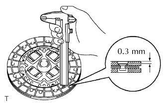
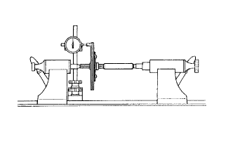
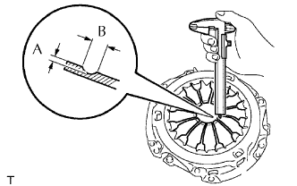
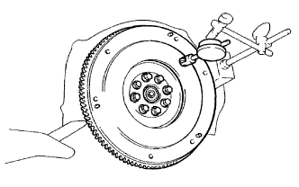
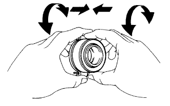

BỘ LI HỢP > KIỂM TRA |
| 1. KIỂM TRA CỤM ĐĨA LI HỢP |
|  |
Dùng thước cặp, đo chiều sâu mũ đinh tán.
|  |
Lắp đĩa li hợp vào cụm hộp số.
Dùng đồng hồ so, kiểm tra độ đảo của đĩa.
| 2. KIỂM TRA CỤM NẮP LI HỢP |
|  |
Dùng thước cặp, đo chiều sâu và chiều rộng của vùng bị mòn của lò xo đĩa.
| Đo | Độ mòn lớn nhất |
| A (chiều sâu) | 0.5 mm (0.020 in.) |
| B (Chiều rộng) | 6.0 mm (0.236 in.) |
| 3. KIỂM TRA BÁNH ĐÀ |
|  |
Dùng đồng hồ so, đo độ đảo của bánh đà.
| 4. KIỂM TRA CỤM VÒNG BI CẮT LI HỢP |
|  |
Quay vòng bi bằng tay trong khi tác dụng lực theo hướng trục.
Nếu vòng bi bị kẹt hoặc có nhiều lực cản, hãy thay thế vòng bi cắt li hợp.